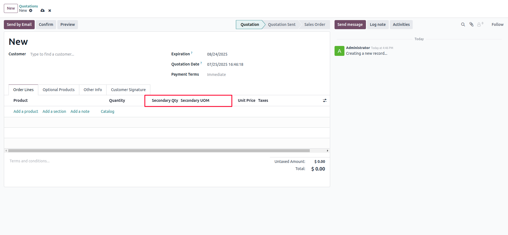
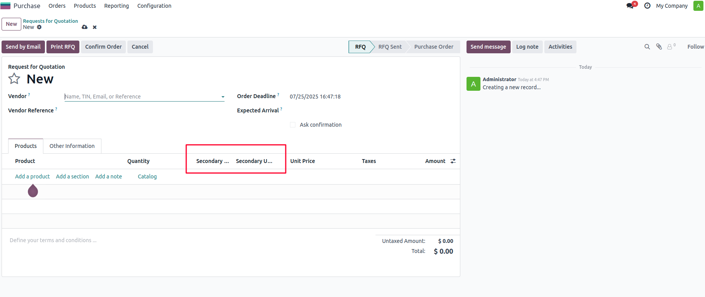
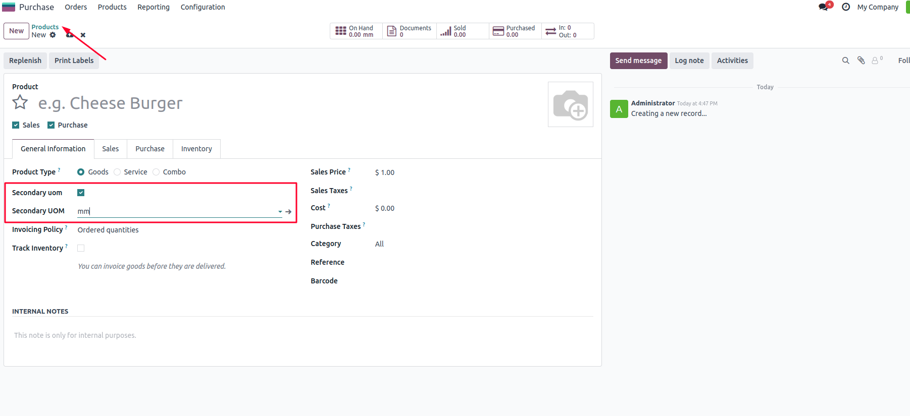

This module allows users to define and use a Secondary Unit of Measure (UOM) for products. Once installed, users can enable secondary UOM at the product level, which will then be available for use in Sale Order Lines and Purchase Order Lines.



Go to the Products menu and open any product form. Enable the Secondary UOM checkbox and choose the desired UOM. Once set, this UOM will be available for selection and display in sales and purchase transactions.
Apagen Solutions